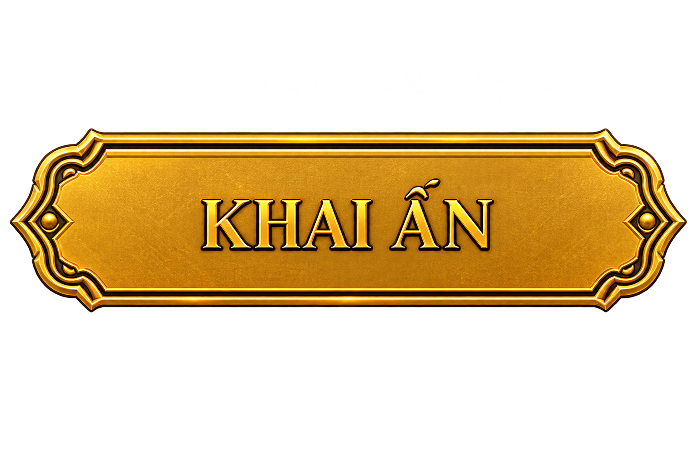

LINH ẤN
#THAN-1992-0182
Một Linh Ấn đang chờ
được khai mở

#THAN-1992-0182
Một Linh Ấn đang chờ
được khai mở

Xin chào
Được tạo riêng cho
câu chuyện của Minh.
Không chỉ là có thêm.
Mà còn là biết đón nhận, gìn giữ và tạo nên giá trị.
Linh Ấn Tài Lộc mang theo một lời chúc về sự hanh thông trên hành trình phía trước — gặp được cơ hội phù hợp, giữ vững những điều đã gây dựng và từng bước tạo nên thành quả của riêng mình.
Tài Lộc bắt đầu từ những cánh cửa được mở ra đúng lúc — một cơ hội mới, một cuộc gặp gỡ ý nghĩa hay một lựa chọn đưa ta đến gần hơn với điều mình mong muốn.
Sự đủ đầy không chỉ nằm ở những gì ta nhận được, mà còn ở khả năng trân trọng, vun đắp và gìn giữ những giá trị mình đã tạo nên.
Tài Lộc cũng là hình ảnh của thành quả — khi sự kiên trì, lựa chọn và nỗ lực theo thời gian dần trở thành những điều đáng tự hào.
Trong tinh thần phong thủy Á Đông, Tài Lộc không chỉ gắn với của cải. Đó còn là hình ảnh của dòng chảy thuận lợi: cơ hội đến đúng lúc, thành quả được gìn giữ và những điều tốt đẹp có cơ hội tiếp tục sinh sôi. Bởi vậy, Linh Ấn Tài Lộc được tạo nên như một biểu tượng nhắc nhớ về sự đủ đầy — không phải chỉ ở những gì ta sở hữu, mà còn ở những giá trị ta xây dựng trên hành trình của mình.
MINH • NHÂM THÂN 1992
LINH ẤN TÀI LỘC • #0182
Linh Ấn này mang tên Minh. Hình tượng linh vật tuổi Thân tạo nên dấu ấn năm sinh. Chủ đề Tài Lộc gửi gắm mong ước về một hành trình nhiều cơ hội và thành quả. Mã #0182 đánh dấu đây là Linh Ấn thuộc về riêng người sở hữu. Khi những chi tiết ấy cùng xuất hiện trên một vật phẩm, Linh Ấn không còn chỉ là một biểu tượng chung. Nó trở thành một dấu ấn mang câu chuyện của Minh.
Chúc Minh gặp phong thời cơ khi cần một bước tiến,
giữ được những giá trị mình đã dày công gây dựng,
và ngày càng có thêm nhiều điều đáng tự hào trên hành trình phía trước.
Tài đến từ cơ hội.
Lộc ở lại bằng giá trị.
Thành quả được tạo nên bởi chính bạn.